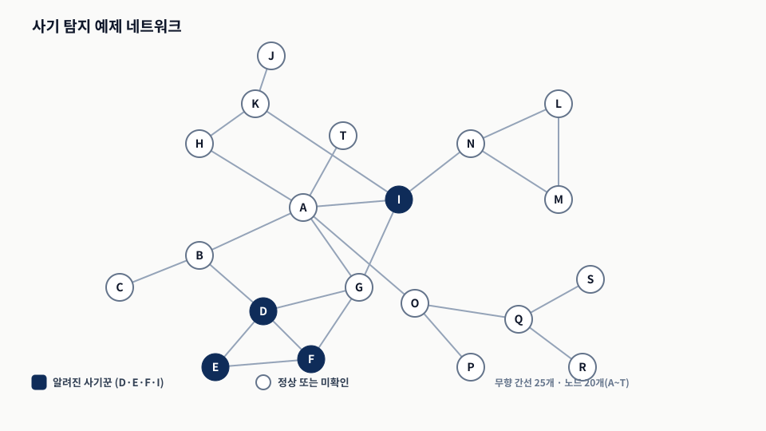
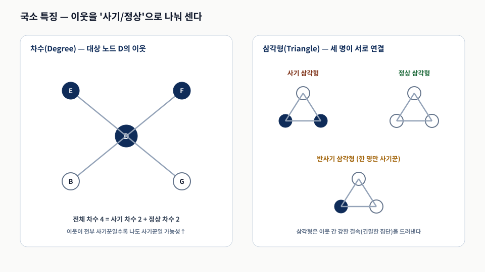
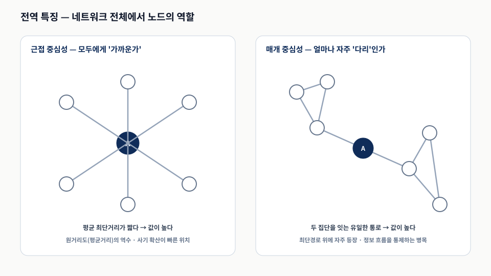
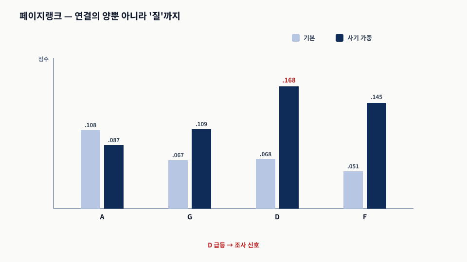
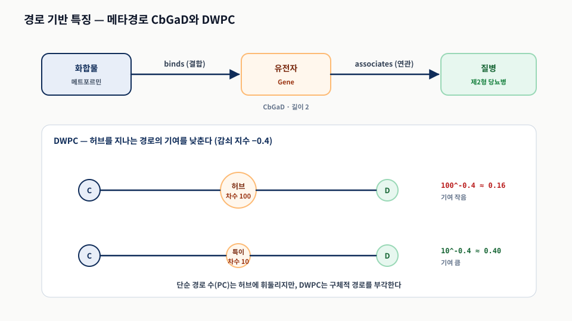
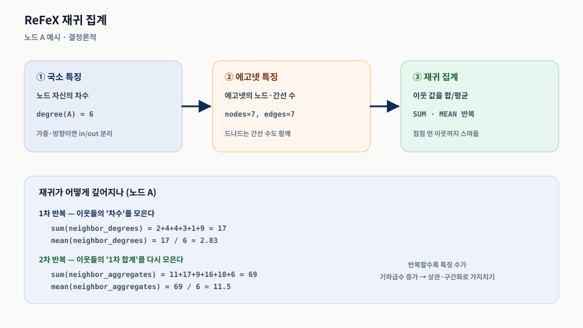

그래프 특징 공학: 수동 및 반자동 접근법
Chapter 10
0. 핵심 요약
로지스틱 회귀부터 딥러닝까지 현대 ML은 그래프 구조를 직접 먹지 못하고 숫자 벡터를 요구한다. 그래서 노드·관계·그래프의 의미 있는 성질을 벡터로 포착하는 벡터화(특징화)가 다운스트림 성능을 좌우한다. 특징을 만드는 방법은 하나의 스펙트럼을 이룬다 — 사람이 설계하는 수동 특징(해석 가능하지만 손이 많이 감), 그 중간의 반자동 특징(ReFeX), 그리고 11·12장의 완전 자동 표현 학습(효율적이나 해석 어려움).
이 장은 수동·반자동에 집중한다. 10.1절은 사기 탐지 네트워크에서 노드 특징(차수·삼각형·밀도·측지 경로·근접/매개 중심성·페이지랭크)을 국소에서 전역으로 쌓아 분류기를 학습하고, 10.2절은 관계 특징(두 노드 벡터 결합, 메타경로·DWPC)을 약물 재창출로 보여 주며, 10.3절은 ReFeX가 재귀 집계로 구조 특징을 자동 생성하되 해석 가능성과 결정론적 성질을 지키는 중간 지대를 제시한다.
- 문제 — ML이 못 먹는 그래프 구조를, 어떻게 의미를 보존한 숫자 벡터로 바꿀 것인가?
- 메커니즘 — 국소(에고넷) → 전역(중심성) 지표를 쌓고, 관계는 노드 결합·메타경로로, 반복은 ReFeX 재귀 집계로.
- 판단 — 해석 가능성·계산 자원·도메인 전문성에 따라 수동·반자동·자동 중 어디에 설지 정한다.
| 절 | 무엇을 특징화하나 | 핵심 도구 | 사례 |
|---|---|---|---|
| 10.1 | 노드 | 차수·삼각형·밀도·경로·중심성·페이지랭크 → 분류기 | 사기 탐지 |
| 10.2 | 관계(노드 쌍) | 노드 벡터 결합 / 메타경로·DWPC | 약물 재창출 |
| 10.3 | 노드(반자동) | ReFeX 재귀 집계 + 가지치기 | 사기 네트워크 |
10.1 노드의 수동 특징 — 사기 탐지 네트워크에서 시작하기
- 노드는 사람, 관계는 연결인 네트워크에서 일부는 알려진 사기꾼이다. 미확인 사기꾼을 찾는 노드 분류가 과제다.
- 각 노드를 특징 벡터로 표현해야 하며, 국소(에고넷) 특징에서 전역 특징으로 나아간다.
- 지표를 하나씩 더할 때마다 노드 표현에 차원이 하나씩 쌓인다.
노드는 사람, 관계는 사람 사이의 연결인 네트워크를 생각하자(그림 1). 이 중 일부(노드 D·E·F·I)는 이미 알려진 사기꾼이고, 전체 명단은 없다. 과제는 노드를 분류해 아직 밝혀지지 않은 사기꾼을 찾거나 각 사람의 사기 피해 위험을 판정하는 것이다. 이 작업은 로지스틱 회귀·랜덤 포레스트 같은 지도 학습 분류기로 푸는데, 그러려면 각 노드를 좋은 지표가 될 특징 집합으로 표현해야 한다.

검은 노드(D·E·F·I)는 알려진 사기꾼, 흰 노드는 정상이거나 아직 확인되지 않은 사람이다. 이 그래프가 이 장 10.1·10.3절 모든 계산의 공통 예제다. 출처: 원자료 그림 10.1을 노드·간선 목록대로 재배치.특징은 두 종류로 나뉜다. 국소 특징은 노드의 1홉 이웃, 즉 에고넷(에고 = 중심 노드, 알터 = 이웃)을 본다. 전역 특징은 네트워크 전체에서 노드가 맡는 역할(매개·근접 중심성, 페이지랭크 등)을 측정한다. 아래 코드는 파이썬·NetworkX로 이 예제 네트워크를 만든다.
Listing 10.1 사기 탐지 네트워크 예제 만들기
빈 무향 그래프에 20개 노드(A~T)와 25개 간선을 넣고, 각 노드에 is_fraudster 불리언 속성을 붙인다. 이 속성이 뒤의 '사기 차수', '사기 삼각형' 같은 도메인 특화 특징의 기준이 된다.
import networkx as nx
def create_fraud_network():
G = nx.Graph() # 무향 그래프
fraudsters = ['D', 'E', 'F', 'I'] # 검은 노드(알려진 사기꾼)
nodes = ['A','B','C','D','E','F','G','H','I','J',
'K','L','M','N','O','P','Q','R','S','T']
G.add_nodes_from(nodes)
for node in G.nodes():
G.nodes[node]['is_fraudster'] = node in fraudsters
edges = [('A','B'),('A','G'),('A','H'),('A','I'),('A','O'),('A','T'),
('B','D'),('B','C'),('D','E'),('D','F'),('D','G'),('E','F'),
('F','G'),('G','I'),('H','K'),('I','K'),('I','N'),('K','J'),
('L','M'),('L','N'),('N','M'),('O','P'),('O','Q'),('Q','R'),('Q','S')]
G.add_edges_from(edges)
return GListing 10.2 사용 예
한 번 만든 그래프 객체 G는 이 장의 모든 지표 계산에 그대로 재사용한다.
G = create_fraud_network()
degree_metrics = compute_degree_metrics(G) # 뒤에서 정의할 지표들
triangle_metrics = compute_triangle_metrics(G)수동 특징의 장점은 해석 가능성이다. 뽑은 각 특징을 그래프만 보고 설명할 수 있어, 데이터가 작거나 설명 가능성이 중요할 때 유효하다. 게다가 잘 정의된 구조 특징은 LLM이 그래프를 추론할 때 딛고 설 '사실의 발판'이 된다.
10.1.1 차수(Degree) — 이웃이 몇 명이며, 그중 사기꾼은 몇인가
- 차수는 이웃 수다. 여기서는 이웃을 사기·정상으로 나눠 사기 차수·정상 차수도 함께 센다.
- 이웃 10명이 전부 사기꾼이면 전부 정상일 때보다 내가 사기꾼일 가능성이 높다.
노드의 차수는 이웃 수다. 도메인에 맞게 한 걸음 더 나아가, 직접 이웃 중 사기꾼과 정상을 구분해 사기 차수와 정상 차수를 함께 쓰면 노드의 직접 연결을 훨씬 잘 표현한다. 그림 2가 그 개념을 보여 준다.

왼쪽: 노드 D의 전체 차수 4 = 사기 차수 2 + 정상 차수 2. 오른쪽: 두 알터가 모두 사기면 사기 삼각형, 모두 정상이면 정상 삼각형, 하나만 사기면 반사기 삼각형. 출처: 원자료 §10.1.1–10.1.2의 정의를 재구성.Listing 10.3 사기 탐지 네트워크에서 여러 종류의 노드 차수 계산
각 노드의 이웃 목록으로 전체 차수를 구하고, is_fraudster가 참인 이웃만 세어 사기 차수를, 나머지를 정상 차수로 나눈다.
degree_metrics = {}
for node in G.nodes():
neighbors = list(G.neighbors(node))
total_degree = len(neighbors)
fraud_degree = sum(1 for n in neighbors
if G.nodes[n].get('is_fraudster', False))
legit_degree = total_degree - fraud_degree
degree_metrics[node] = {'total_degree': total_degree,
'fraud_degree': fraud_degree, 'legit_degree': legit_degree}| 노드 | A | D | E | F | G | I |
|---|---|---|---|---|---|---|
| 전체 차수 | 6 | 4 | 2 | 3 | 4 | 4 |
| 사기 차수 | 1 | 2 | 2 | 2 | 3 | 0 |
| 정상 차수 | 5 | 2 | 0 | 1 | 1 | 4 |
예를 들어 노드 D는 이웃 4명 중 2명이 사기꾼, 2명이 정상이다. 노드 G는 이웃 4명 중 3명이 사기꾼으로, 사기 활동에 강하게 둘러싸여 있다.
10.1.2 삼각형(Triangles) — 서로 얽힌 세 사람의 관계
- 삼각형은 세 노드가 모두 서로 연결된 부분 그래프로, 이웃 간 강한 결속을 나타낸다.
- 두 알터의 사기 여부로 사기·정상·반사기 삼각형으로 나눈다.
삼각형은 세 노드가 모두 서로 연결된 부분 그래프다(A-B, A-C, B-C가 모두 존재). 에고넷 안 삼각형은 대상 노드가 이웃들과 강하게 결속돼 있다는 신호다. 내 친구들이 서로도 친구인 경우를 떠올리면 된다. 두 알터가 모두 사기면 사기 삼각형, 모두 정상이면 정상 삼각형, 하나만 사기면 반사기 삼각형이다(그림 2 오른쪽).
Listing 10.4 사기 탐지 네트워크에서 삼각형 지표 계산
각 노드의 두 이웃 쌍에 간선이 있으면 삼각형으로 보고, 두 알터의 is_fraudster 값으로 사기/정상/반사기를 센다.
for node in G.nodes():
triangles = []
neighbors = list(G.neighbors(node))
for i in range(len(neighbors)):
for j in range(i + 1, len(neighbors)):
if G.has_edge(neighbors[i], neighbors[j]):
triangles.append((neighbors[i], neighbors[j]))
for n1, n2 in triangles:
f1 = G.nodes[n1].get('is_fraudster', False)
f2 = G.nodes[n2].get('is_fraudster', False)
if f1 and f2: fraud_triangles += 1
elif not f1 and not f2: legit_triangles += 1
else: semi_fraud_triangles += 1| 노드 | A | D | E | F | G | I | L |
|---|---|---|---|---|---|---|---|
| 전체 삼각형 | 1 | 2 | 1 | 2 | 2 | 1 | 1 |
| 사기 삼각형 | 0 | 1 | 1 | 1 | 1 | 0 | 0 |
| 정상 삼각형 | 0 | 0 | 0 | 0 | 0 | 1 | 1 |
| 반사기 삼각형 | 1 | 1 | 0 | 1 | 1 | 0 | 0 |
10.1.3 밀도(Density) — 이웃들이 서로 얼마나 촘촘히 얽혀 있나
- 밀도는 가능한 최대 간선 대비 실제 간선의 비율(0~1)이다.
- 각 노드의 에고넷 밀도를 계산해 이웃끼리 얼마나 얽혀 있는지 본다.
N개 노드의 완전 연결 그래프에서 가능한 간선 수는 C(N,2) = N(N−1)/2이다(서로 다른 두 노드 쌍의 수). 간선 수를 M이라 하면 밀도는 다음과 같다.
d = M / C(N,2) = 2M / (N(N−1)) — 0(연결 없음)에서 1(완전 연결) 사이
각 노드의 에고넷 밀도도 계산할 수 있다. 예로 노드 A의 에고넷에는 노드가 7개 있어 가능한 간선은 7·6/2 = 21개인데, 실제 간선은 7개이므로 d = 7/21 ≈ 0.33이다. 밀도는 성격상 사기/정상 같은 도메인 특화 변형을 두지 않는다. (밀도 계산 코드는 원자료 리스트 10.5로 제공되며, 위 공식을 각 노드 에고넷에 적용한다.)
| 노드 | A | B | C | D | E | F | G |
|---|---|---|---|---|---|---|---|
| 밀도 | 0.33 | 0.5 | 1 | 0.6 | 1 | 0.83 | 0.6 |
밀도가 1인 노드(C·E·J·L·M 등)는 이웃들이 서로 빠짐없이 연결돼 있다는 뜻이고, A(0.33)는 이웃들끼리는 별로 연결돼 있지 않다. 여기까지가 에고넷 기반 지표이고, 다음부터는 네트워크 전체를 고려한다.
10.1.4 측지 경로(또는 최단 경로) — 사기꾼까지 얼마나 가까운가
- 측지 경로는 두 노드 사이의 최소 거리(홉 수)다.
- 도메인에 맞게 '가장 가까운 사기꾼까지의 거리'와 1·2·3홉 경로 수를 센다.
측지 경로(최단 경로)는 두 노드 사이의 최소 거리다. 도메인에 맞게, 대상 노드에서 가장 가까운 사기꾼까지의 거리와 임의의 사기꾼에 이르는 1홉·2홉·3홉 경로 수를 센다. 경로가 많고 짧을수록 사기가 대상 노드에 영향을 미칠 가능성이 크다. 예로 노드 A는 사기꾼 I와 직접 연결(측지 거리 1)이고, A-G-I·A-B-D·A-G-D·A-G-F 등 2홉 경로가 4개다. 계산에는 다익스트라 알고리즘(잠정 거리가 가장 작은 노드를 반복 선택하며 최단 경로 트리를 쌓음)을 쓴다. (자동 추출 코드는 원자료 리스트 10.6으로, NetworkX의 shortest_path로 각 사기꾼까지 거리를 구하고 max_hops 이내 홉별 경로 수를 센다.)
| 노드 | A | B | C | G | H |
|---|---|---|---|---|---|
| 측지 거리 | 1 | 1 | 2 | 1 | 2 |
| 1홉 경로 | 1 | 1 | 0 | 3 | 0 |
| 2홉 경로 | 4 | 3 | 1 | 5 | 2 |
| 3홉 경로 | 18 | 13 | 3 | 25 | 4 |
10.1.5 근접 중심성(Closeness) — 네트워크에서 얼마나 "가운데"에 있나
- 근접 중심성은 한 노드가 다른 모든 노드에 얼마나 가까운지다.
- 원거리도(평균 최단 거리)의 역수이며, 도달 불가 노드는 제외해 정규화한다.
한 노드에서 다른 모든 노드까지의 평균 최단 거리를 원거리도(farness)라 한다. g(vi) = (Σ d(vi,vj)) / (N−1). 근접 중심성은 중심적일수록 큰 값을 주려고 이 원거리도의 역수로 정의한다. closeness(vi) = g(vi)⁻¹. 값이 크면 다른 노드들과 대체로 가깝다는 뜻이다. 사기 맥락에서 사기꾼의 근접 중심성이 높으면 사기가 네트워크를 통해 빠르게 퍼질 수 있다. 도달할 수 없는 노드까지의 거리는 무한대가 되므로, 실무 구현은 도달 가능한 부분만 사용해 정규화한다(원자료 리스트 10.7). 그림 3 왼쪽이 이 개념이다.

근접 중심성은 '모두에게 가까운가'(평균 거리의 역수)를, 매개 중심성은 '얼마나 자주 다리인가'(최단 경로 위 등장)를 측정한다. 두 지표는 서로 다른 관점의 중요도다. 출처: 원자료 §10.1.5–10.1.6의 정의를 재구성.| 노드 | A | G | I | O | R | S |
|---|---|---|---|---|---|---|
| 근접 중심성 | 0.5 | 0.43 | 0.45 | 0.40 | 0.24 | 0.24 |
노드 A(0.5)가 다른 모든 노드에 가장 가깝고, R·S(0.24)가 가장 멀다.
10.1.6 매개 중심성(Betweenness) — 얼마나 자주 다리 역할을 하나
- 매개 중심성은 다른 노드 쌍들의 최단 경로 위에 한 노드가 얼마나 자주 나타나는지다.
- 값이 높은 노드는 정보 흐름을 통제하는 다리·병목이다.
매개 중심성은 다른 노드 쌍들 사이 최단 경로 위에 그 노드가 얼마나 자주 등장하는지를 잰다. betweenness(v) = Σ σst(v)/σst이며, σst는 s–t 최단 경로 총수, σst(v)는 그중 v를 지나는 수다(그림 3 오른쪽). 값이 높으면 많은 노드 쌍의 다리 역할을 해 정보 흐름을 통제할 잠재력이 크다.
Listing 10.8 사기 탐지 네트워크에서 매개 중심성 계산
NetworkX의 betweenness_centrality를 쓰고, 평균 이상인 노드를 '핵심 다리', 임계값 초과 노드를 '병목'으로 식별하는 분석을 덧붙인다.
betweenness = nx.betweenness_centrality(G, normalized=True, endpoints=False)
# 평균 이상 = 핵심 다리
key_bridges = [n for n, s in betweenness.items()
if s > sum(betweenness.values())/len(betweenness)]| 노드 | A | I | O | G | N | C·E·J·L·M |
|---|---|---|---|---|---|---|
| 매개 중심성 | 104 | 65 | 63 | 35.3 | 34 | 0 |
노드 A(104)가 결정적 다리이며, C·E·J·L·M 등은 0으로 어떤 쌍의 다리도 아니다.
10.1.7 페이지랭크(PageRank) — 연결의 양뿐 아니라 질까지 본다
- 페이지랭크는 들어오는 연결의 구조로 중요도를 잰다. 순위 높은 노드와 연결될수록 점수가 높다.
- 사기 맥락에서는 기본 페이지랭크와 사기 가중 페이지랭크를 함께 계산해 차이를 본다.
페이지랭크는 연결의 양뿐 아니라 질까지 본다. 순위 높은 노드와 연결된 노드가 더 높은 점수를 받는다(유명 인사의 추천이 더 유력해 보이는 원리). 사기 탐지에서는 두 변형을 쓴다 — 모든 연결을 똑같이 보는 기본 페이지랭크와, 사기꾼 노드의 초기 중요도를 개인화 벡터로 키운 사기 가중 페이지랭크. 그림 4가 그 차이를 보여 준다.
Listing 10.9 사기 탐지를 위한 페이지랭크 변형 계산
감쇠 계수 damping_factor=0.85로 확률적 서퍼가 링크를 따를 확률을 조절하고, 사기꾼에 가중치를 준 personalization으로 점수를 사기 쪽으로 편향시킨다.
base_pagerank = nx.pagerank(G, alpha=0.85, personalization=None, weight=None)
fraud_personalization = {n: (2.0 if G.nodes[n].get('is_fraudster') else 1.0)
for n in G.nodes()}
fraud_pagerank = nx.pagerank(G, alpha=0.85,
personalization=fraud_personalization, weight=None)
노드 A는 기본 페이지랭크가 가장 높지만(0.108) 사기 가중에서는 낮아진다. 노드 D는 기본은 평범하나 사기 가중에서 급등(0.068→0.168)해, 사기꾼과의 실질적 연결을 드러낸다. 두 값의 '차이(divergence)'가 정밀 조사 대상을 가려낸다. 출처: 원자료 표 10.7 값을 시각화.| 노드 | A | D | E | F | G |
|---|---|---|---|---|---|
| 기본 | 0.108 | 0.068 | 0.036 | 0.051 | 0.067 |
| 사기 가중 | 0.087 | 0.168 | 0.114 | 0.145 | 0.109 |
10.1.8 예측(Prediction) — 뽑아낸 특징으로 분류기를 학습시키기
- 지금까지의 지표를 노드마다 한 데이터프레임으로 모으고, 라벨을 붙여 로지스틱 회귀로 학습한다.
- 과정은 반복적이며, 전 과정이 사람의 통제 아래 있고 각 특징을 설명할 수 있다.
이 과정은 반복적이다. 분류기가 충분한 품질에 이를 때까지 특징을 늘려 간다. 아래 리스팅들은 모든 지표를 노드별로 모으고(10.10), 학습·평가하고(10.11), 예측하고(10.12), 전체를 실행한다(10.13). 예제 그래프가 작아 결과 자체는 통계적으로 의미 있진 않지만, 과정은 큰 그래프에 그대로 적용된다.
Listing 10.10 노드 특징 만들기
차수·삼각형·밀도·경로·근접/매개 중심성·페이지랭크를 노드마다 한 딕셔너리로 모으고, 라벨 is_fraudster를 붙여 pandas 데이터프레임으로 만든다(각 행=노드, 각 열=특징).
def create_node_features_dataset(G):
degree_metrics = compute_degree_metrics(G)
triangle_metrics = compute_triangle_metrics(G)
density_metrics = compute_density_metrics(G)
# ... path / closeness / betweenness / pagerank 도 동일하게 계산
features_dict = {}
for node in G.nodes():
features_dict[node] = {
'total_degree': degree_metrics[node]['total_degree'],
# ... 모든 지표 ...
'is_fraudster': G.nodes[node]['is_fraudster']} # 라벨
return pd.DataFrame.from_dict(features_dict, orient='index')Listing 10.11 사기 분류기를 학습하고 정확도를 평가하기
계층적 분할(stratify)로 학습·테스트가 같은 사기 비율을 유지하고, StandardScaler로 척도를 맞춘 뒤 로지스틱 회귀로 학습한다. 특징 중요도로 어떤 지표가 사기 탐지에 유용한지 본다.
X = df.drop('is_fraudster', axis=1); y = df['is_fraudster']
X_train, X_test, y_train, y_test = train_test_split(
X, y, test_size=0.2, random_state=42, stratify=y)
X_train_scaled = StandardScaler().fit_transform(X_train)
clf = LogisticRegression(random_state=42, max_iter=1000)
clf.fit(X_train_scaled, y_train)
feature_importance = pd.DataFrame({'feature': X.columns,
'importance': abs(clf.coef_[0])}).sort_values('importance', ascending=False)Listing 10.12 학습된 모델로 노드의 클래스 예측하기
노드의 특징을 스케일링해 predict_proba로 사기일 확률을 반환한다.
def predict_fraud_probability(G, node, trained_results):
node_features = create_node_features_dataset(G).loc[node].drop('is_fraudster')
scaled = trained_results['scaler'].transform(node_features.values.reshape(1, -1))
return trained_results['model'].predict_proba(scaled)[0][1]Listing 10.13 전체 과정의 결과 얻기
네트워크를 만들고 학습·평가한 뒤, 상위 5개 중요 특징과 특정 노드의 사기 확률을 출력한다.
G = create_fraud_network()
results = train_fraud_classifier(G)
print(results['classification_report'])
print(results['feature_importance'].head()) # 상위 5개 중요 특징
prob = predict_fraud_probability(G, 'A', results)과정이 복잡해도 전적으로 사람의 통제 아래 있고 각 특징을 그래프만 보고 설명할 수 있다. 데이터가 작거나 설명 가능성이 중요할 때 유효하다.
10.2 관계의 수동 특징 — 두 노드 사이의 연결을 표현하기
- 관계(링크) 예측은 '두 노드가 주어졌을 때 그 사이에 관계가 존재할 가능성'을 묻는다.
- 노드 쌍을 입력으로 쓰며, 노드 기반 결합 또는 경로 기반 특징으로 표현한다.
노드가 아니라 노드 사이의 관계를 표현하는 문제로 눈을 돌리자. 관계 예측(링크 예측)은 “두 노드가 주어졌을 때 그 사이에 관계가 존재할 가능성은?”을 묻는다. 두 단백질의 상호작용, 고객–제품 관심, 약–질병 치료가 모두 같은 질문이다. 입력은 개별 노드가 아니라 노드 쌍이며, 두 접근이 있다 — 출발·도착 노드의 특징 벡터를 결합하는 노드 기반 결합, 그리고 노드가 연결된 방식을 분석하는 경로 기반 특징(메타경로). 이 절은 약물 재창출(기존 약의 새 용도 찾기)을 사례로 든다.
10.2.1 노드 기반 표현(Node-based representation) — 두 노드의 지문을 합치기
- 두 노드의 특징 벡터(지문)를 결합해 링크 표현을 만든다. 실재 연결이든 잠재 연결이든 작동해야 한다.
- 이어붙이기·평균·L1·L2·아다마르 곱 중 시나리오에 맞는 것을 벤치마크로 고른다.
가장 직관적인 접근은 연결될 수 있는 두 노드의 특징(지문)을 결합하는 것이다. 이 결합은 이미 연결된 쌍이든 잠재적 쌍이든 어떤 노드 쌍에도 작동해야 한다. 흔한 결합 연산은 아래 표와 같다.
Listing 10.14 두 노드 표현을 하나의 링크 표현으로 결합하기
이어붙이기·평균·L1·L2·아다마르 곱을 각각 한 함수로 구현한다.
def catenate(u, v): return u + v # 이어붙이기(차원 2배)
def operator_avg(u, v): return (u + v) / 2.0 # 평균
def operator_l1(u, v): return np.abs(u - v) # L1(맨해튼)
def operator_l2(u, v): return (u - v) ** 2 # L2(유클리드)
def operator_hadamard(u, v): return u * v # 아다마르(원소별 곱)| 연산 | 정의 | 예 결과 | 특징 |
|---|---|---|---|
| 이어붙이기 | u 뒤에 v | [1,4,3,1] | 정보 보존, 차원 2배 |
| 평균 | (u+v)/2 | [2,2.5] | 중심 경향, 차원 유지 |
| L1 | |u−v| | [2,3] | 비유사성 |
| L2 | (u−v)² | [4,9] | 큰 차이 강조 |
| 아다마르 | u×v | [3,4] | 곱셈적 결합 |
어느 것이 최선인지 알려 주는 일반 규칙은 없으므로, 벤치마크로 시나리오에 맞는 결합을 고른다.
10.2.2 경로 기반 특징(Path-based features) — 메타경로로 약과 질병을 잇기
- 메타경로는 노드 타입·관계 타입의 순서열로 정의된 경로 패턴이다.
- 단순 경로 수(PC)는 허브에 휘둘리므로, 차수로 감쇠한 DWPC를 쓴다.
노드 표현 대신 노드가 연결된 방식으로 관계를 특징짓는다. 이 수동 표현은 도메인 특화적이다. 사례는 Hetionet(19개 DB 통합, 5만+ 노드: 약물·질병·유전자·증상). Himmelstein 등[5]은 화합물–질병 사이 길이 2~4의 모든 메타경로를 평가해 약물 재창출에 진전을 냈다. 메타경로는 “화합물이 유전자에 결합(binds)하고 그 유전자가 질병과 연관(associates)된다”처럼 노드 타입과 관계 타입의 순서열이다(그림 5).

위: 메타경로 CbGaD(화합물–binds–유전자–associates–질병). 아래: DWPC는 각 경로를 중간 노드 차수의 −0.4승으로 감쇠해, 허브(차수 100, ≈0.16)보다 구체적 유전자(차수 10, ≈0.40)를 지나는 경로를 부각한다. 출처: 원자료 §10.2.2·표 10.8을 재구성.| 메타경로 | 길이 | 약어 |
|---|---|---|
| Compound–binds–Gene–associates–Disease | 2 | CbGaD |
| Compound–resembles–Compound–treats–Disease | 2 | CrCtD |
| Compound–binds–Gene–expresses–Anatomy–localizes–Disease | 3 | CbGeAlD |
| Compound–binds–Gene–participates–Pathway–participates–Gene–associates–Disease | 4 | CbGpPWpGaD |
단순히 경로 수(PC)를 세면 연결이 많은 허브가 결과를 지배해 오해를 부른다. 그래서 차수 가중 경로 수(DWPC)를 쓴다. 각 경로를 중간 노드 차수에 반비례하도록 가중(감쇠 지수 −0.4)해, 연결 많은 노드의 기여를 낮추고 구체적 경로를 부각한다.
Listing 10.15 CbGaD 메타경로에 대한 메트포르민–제2형 당뇨병 DWPC
count(path)로 경로 수 PC를, reduce(... d ^ -0.4)로 각 중간 노드 차수를 감쇠해 곱한 뒤 합산한 DWPC를 구한다. Hetionet에서 이 값은 0.0007이며, 메트포르민–제2형 당뇨병 쌍 벡터의 CbGaD 특징이 된다.
MATCH path = (c:Compound)-[:BINDS_CbG]-(g)-[:ASSOCIATES_DaG]-(d:Disease)
WHERE c.name = 'Metformin' AND d.name = 'type 2 diabetes mellitus'
WITH [count{(v)-[:BINDS_CbG]-()}, count{()-[:BINDS_CbG]-(g)},
count{(g)-[:ASSOCIATES_DaG]-()}, count{()-[:ASSOCIATES_DaG]-(d)}] AS degrees, path, d
WITH d.name AS disease_name, count(path) AS PC,
sum(reduce(pdp = 1.0, x in degrees | pdp * x ^ -0.4)) AS DWPC
RETURN disease_name, PC, DWPCListing 10.16 CbGeAlD 메타경로에 대한 DWPC 값
길이 3짜리 메타경로. 화합물이 유전자에 결합하고, 그 유전자가 해부 구조에서 발현되며(<-EXPRESSES-), 그 해부 구조에 질병이 국소화된다. 구조는 10.15와 같고 셀 차수만 늘어난다.
MATCH path = (c:Compound)-[:BINDS_CbG]-(g:Gene)<-[:EXPRESSES_AeG]-
(a:Anatomy)<-[:LOCALIZES_DlA]-(d:Disease)
WHERE c.name = 'Metformin' AND d.name = 'type 2 diabetes mellitus'
// ... degrees 리스트에 6개 방향별 차수 ...
WITH d.name AS disease_name, count(path) AS PC,
sum(reduce(pdp = 1.0, x in degrees | pdp * x ^ -0.4)) AS DWPC
RETURN disease_name, PC, DWPCListing 10.17 CbGpPWpGaD 메타경로에 대한 DWPC 값
길이 4짜리 메타경로. 화합물이 유전자 g1에 결합, g1이 경로(Pathway)에 참여, 같은 경로에 g2도 참여, g2가 질병과 연관된다.
MATCH path = (c:Compound)-[:BINDS_CbG]-(g1:Gene)-[:PARTICIPATES_GpPW]->
(pw:Pathway)<-[:PARTICIPATES_GpPW]-(g2:Gene)-[:ASSOCIATES_DaG]-(d:Disease)
WHERE c.name = 'Metformin' AND d.name = 'type 2 diabetes mellitus'
// ... degrees 리스트에 8개 방향별 차수 ...
RETURN d.name, count(path) AS PC,
sum(reduce(pdp = 1.0, x in degrees | pdp * x ^ -0.4)) AS DWPC모든 화합물–질병 쌍의 모든 메타경로를 계산하는 것은 비용이 막대하다. Himmelstein 등은 2단계 축소로 이를 관리했다 — 통계적 메타경로 축소(1,026 → 709개)와 도메인·차수 기반 쌍 선택. 노드 결합은 더 단순하지만 수동 노드 특징과 함께 쓰면 성능이 나쁜 경우가 많고, 자동 추출 특징과 쓸 때 더 효과적이다.
원자료는 그래프 특징 공학에 LLM을 쓰는 법도 소개한다. 정확한 스키마와 예시를 '사실의 발판'으로 쥐여 주면, LLM이 메타경로 설명을 Cypher 쿼리로 번역(쿼리 생성)하고, 눈에 안 띄는 관련 패턴을 제안(특징 공학)하며, 실행 인프라 코드를 돕는다(코드 생성). 지어내지 않게 스키마·예시를 함께 주는 것이 핵심이다.
10.3 반자동 특징 추출 — ReFeX로 손일을 덜기
- ReFeX는 수동 공학의 해석 가능성을 지키면서 특징 선택을 자동화하는 중간 지대다.
- 국소·에고넷 특징을 재귀적으로 집계해 '지역(행동적)' 특징을 만든다.
수동 공학은 통찰을 주지만 도메인 전문성·시간·맞춤화 부담이 크다. ReFeX(재귀적 특징 추출)는 그 장점(해석 가능성·신뢰성·예측 가능성)을 지키면서 특징 선택을 자동화하는, 수동과 신경망 사이의 중간 지대다. 블랙박스와 달리 과정이 투명해 “왜 이 계정이 의심스러운가”를 설명해야 하는 사기 탐지에 값지다. 또 서로 다른 그래프·시점 간 비교가 가능하다.
ReFeX는 국소(노드 기반) 특징을 이웃(에고넷) 특징과 재귀적으로 결합해 지역(행동적) 특징을 만든다. 즉 노드의 정체성이 아니라 “어떤 종류의 노드와 연결되는가”라는 성격을 담는다. 두 규칙 — 구조적(추가 속성 없이 구조만 사용)과 효과적(속성 예측에 도움 + 그래프 간 전이 가능) — 을 따른다. 과정은 ① 국소 특징(차수) ② 에고넷 특징(노드·간선 수) ③ 재귀 집계(합/평균)의 세 단계이며, 재귀는 특징 수를 기하급수로 늘리므로 상관 분석·로그 구간화·임계값 가지치기로 관리한다. 사람의 감독은 여전히 필수다.
10.3.1 ReFeX를 손으로 수행하기 — 한 노드씩 따라가며
- 같은 사기 네트워크에서(색은 무시) 국소 차수 → 에고넷 → 재귀 집계를 손으로 따라간다.
- 노드 A: 차수 6 → 이웃 차수 합 17 → 이웃 합계의 합 69로 재귀가 깊어진다.
같은 네트워크에 ReFeX를 손으로 적용한다(ReFeX는 노드 타입을 무시하므로 색은 상관없다). 단순화를 위해 무향·비가중, 가지치기 생략. 그림 6이 세 단계와 노드 A의 재귀를 보여 준다.

① 국소: degree(A)=6. ② 에고넷: 노드 7·간선 7. ③ 재귀: 1차에 이웃 차수 합 17, 2차에 이웃의 1차 합계를 다시 합해 69. 반복할수록 더 먼 이웃 정보가 스며들고, 특징이 기하급수로 늘어 가지치기가 필요하다. 출처: 원자료 §10.3.1·표 10.9~10.11을 재구성.| 노드 | A | B | C | D | E |
|---|---|---|---|---|---|
| 차수 | 6 | 3 | 1 | 4 | 2 |
| 노드 에고넷 | 노드 수 | 내부 간선 | 드나드는 간선 |
|---|---|---|---|
| A | 7 | 7 | 9 |
| B | 4 | 3 | 5 |
| D | 5 | 6 | 4 |
노드 A를 예로 재귀를 따라가자. 1차 반복: 이웃(H·I·G·B·T·O) 차수의 합 = 2+4+4+3+1+9 = 17, 평균 ≈ 2.83. 2차 반복: 각 이웃이 가진 1차 합계를 다시 더해 11+17+9+16+10+6 = 69, 평균 = 11.5. 이렇게 반복할수록 더 먼 이웃 정보가 A에게 스며든다.
| 특징 유형 | 특징 | 값 |
|---|---|---|
| 국소 | 차수 | 6 |
| 에고넷 | 에고넷의 간선 수 | 7 |
| 재귀 1차 | 이웃 차수의 합 / 평균 | 17 / 2.83 |
| 재귀 2차 | 이웃 합계의 합 / 평균 | 69 / 11.5 |
10.3.2 코드로 ReFeX를 자동 수행하기
- 세 단계(국소·에고넷·재귀 집계)를 클래스로 옮기고, 상관 기반 가지치기로 중복 특징을 제거한다.
- ReFeX는 결정론적이라 같은 입력에 같은 출력을 내며, 변경 시 영향받은 특징만 재계산할 수 있다.
아래는 구현의 핵심이다. _extract_local_features(차수, 방향 그래프면 in/out 분리), _extract_egonet_features(노드·간선 수·밀도), _generate_recursive_features(이웃 특징을 np.sum·np.mean으로 집계), _prune_features(표준화 후 상관 0.95 초과 특징 제거).
Listing 10.18 ReFeX 구현(핵심 부분)
반복 한계와 상관 임계값으로 초기화하고, 국소 → 에고넷 → 재귀 집계를 이어붙인 뒤 상관 기반 가지치기를 수행한다.
class ReFeX:
def __init__(self, max_iterations=2, correlation_threshold=0.95):
self.max_iterations = max_iterations
self.correlation_threshold = correlation_threshold
def extract_features(self, G):
features = self._extract_local_features(G) # 1) 국소(차수)
features = np.column_stack((features,
self._extract_egonet_features(G))) # 2) 에고넷
for _ in range(self.max_iterations):
new = self._generate_recursive_features(G, features) # 3) 재귀 집계
features = np.column_stack((features, new))
return self._prune_features(features) # 가지치기
def _generate_recursive_features(self, G, cur):
# 이웃들의 특징을 합과 평균으로 집계
# new[:, :k] = np.sum(neighbor_feats, axis=0)
# new[:, k:] = np.mean(neighbor_feats, axis=0)
...핵심 정리
- 수동·반자동 특징 공학은 해석 가능성과 자동화 사이 균형을 잡으며 ML의 토대를 놓는다.
- 노드 특징은 국소(에고넷) + 전역(중심성) 지표를 결합해 만든다.
- 관계는 노드 기반 결합(이어붙이기·평균·L1/L2·아다마르) 또는 경로 기반(메타경로·DWPC)으로 표현한다.
- ReFeX는 재귀 집계로 해석 가능한 구조 특징을 자동 생성하는 중간 지대다. 선택 기준은 해석 가능성·계산 자원·도메인 전문성이다.
결론은 “어떤 지표를 쓰느냐”가 아니라 “해석 가능성과 자동화 사이 어디에 설 것인가”의 설계다. 수동으로 국소·전역 지표를 쌓아 통제와 설명력을 얻고, 관계는 노드 결합·메타경로로 표현하며, 반복이 부담되면 ReFeX로 자동화하되 사람의 감독과 가지치기를 남긴다. 이 토대 위에서 11·12장의 완전 자동 표현 학습이 무엇을 얻고 무엇(해석 가능성·결정론)을 내주는지 판단할 수 있다. 발표자료·전체 코드는 발표자료와 이 책의 코드 저장소에서 이어 볼 수 있다.
핵심 용어
| 용어 | 이 장에서의 의미 |
|---|---|
| 벡터화·특징화 | 그래프의 노드·관계·그래프를 ML이 처리할 숫자 벡터로 바꾸는 표현 단계. |
| 에고넷 / 에고 / 알터 | 중심 노드(에고)와 그 이웃(알터)으로 이뤄진 국소 네트워크. |
| 차수 / 사기 차수 | 이웃 수. 사기 도메인에서는 사기·정상 이웃으로 세분. |
| 삼각형 / 반사기 삼각형 | 세 노드가 모두 연결된 부분 그래프. 두 알터 중 하나만 사기면 반사기. |
| 밀도 | 가능한 최대 간선 대비 실제 간선 비율(0~1). |
| 측지·최단 경로 | 두 노드 사이 최소 거리(홉). 다익스트라로 계산. |
| 근접 중심성 / 원거리도 | 다른 모든 노드에 얼마나 가까운지. 평균 최단 거리(원거리도)의 역수. |
| 매개 중심성 | 다른 쌍들의 최단 경로 위에 얼마나 자주 나타나는지. 다리·병목. |
| 페이지랭크 | 연결의 양뿐 아니라 질까지 보는 중요도. 사기 가중 변형 가능. |
| 메타경로 / DWPC | 노드·관계 타입의 순서열. DWPC는 차수로 감쇠해 허브 편향을 줄임. |
| ReFeX | 재귀 집계로 구조 특징을 자동 추출하는 반자동·결정론적 방법. |
참고 자료와 도형 출처
- [1]Alessandro Negro 외, Knowledge Graphs and LLMs in Action, Manning. Chapter 10 원문·해설판을 재구성 근거로 사용.
- [5]Himmelstein 외, Hetionet 기반 약물 재창출 연구 — 메타경로·DWPC의 출처(§10.2.2).
- [8]ReFeX(Recursive Feature eXtraction) — §10.3의 출처.
- [F]그림 1~6은 원자료 그림 10.1~10.10과 표 10.1~10.11의 관계·값을 공개용으로 재구성한 발표자 도해다. 원문 스캔·그림은 복제하지 않았다.